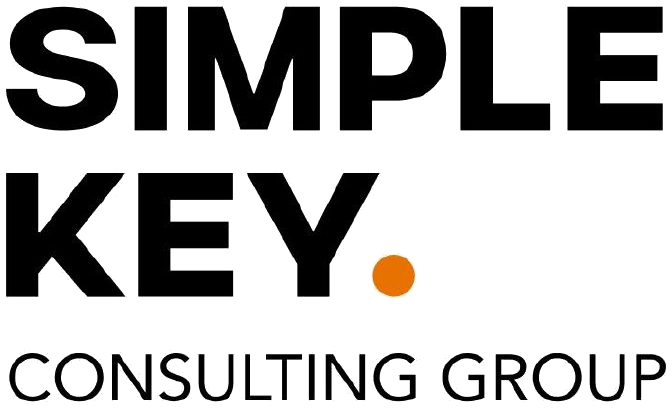

자료실로 돌아가기기기 · 상황별 도구 표
회의 녹음을 글로 바꿀 때, 내 기기와 상황에 맞는 도구를 찾는 표예요.
기기 · 상황별 도구 표
내 상황 한 줄만 찾으면 돼요. 「먼저 써 볼 것」부터 해 보고, 안 되면 오른쪽 칸 도구로 바꿔요.
| 상황 | 먼저 써 볼 것 | 조건 | 안 되면 |
|---|---|---|---|
| 대면 · 아이폰 | 음성 메모 받아쓰기 | 아이폰 12 이상, 한국어 | 클로바노트 같은 받아쓰기 앱 |
| 대면 · 갤럭시 | 음성 녹음 앱 텍스트 변환 | 삼성 계정 · 인터넷, 기종마다 다름 | 클로바노트 같은 받아쓰기 앱 |
| 대면 · 맥 | 음성 메모 | 애플 칩 맥, macOS 15 이상 | 받아쓰기 서비스 · 노션 AI 회의록 |
| 대면 · 윈도우 | 받아쓰기 서비스(클로바노트 같은 것) · 노션 AI 회의록 | 노션은 비즈니스 요금제 이상 | 폰 녹음 앱 |
| 온라인 · 구글 밋 | Gemini 회의록 | 회사 · 학교 구글 계정 해당 요금제 또는 구글 AI 요금제 | 폰 녹음 앱 옆에 켜 두기 |
| 온라인 · 줌 | 줌 회의 요약(이름이 ZoomMate로 바뀜) | 무료 요금제는 횟수 제한, 요금제에 따라 조건이 달라요 | 폰 녹음 앱 옆에 켜 두기 |
| 온라인 · 팀즈 | 라이브 전사 | 회사 계정 | 폰 녹음 앱 옆에 켜 두기 |
| 미팅이 많음 | 녹음 전용 기기(플라우드 같은 것) | 무료 월 300분, 그 이상은 유료 | 위 칸 도구 |
기종, 요금제, 지역에 따라 안 될 수 있어요. 이름과 조건도 자주 바뀌니까 내 기기에서 한 번 확인해 보세요.